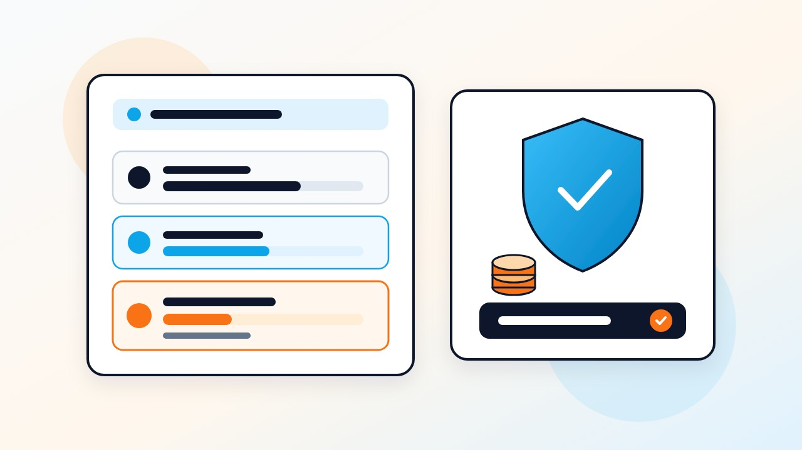

地方議会議員選挙の供託金は、指定都市議会が50万円、一般市・特別区議会が30万円、町村議会は0円（不要）であり、一定の得票数（供託物没収点）を超えれば全額返還されます。さらに選挙カー・選挙ポスター・選挙ビラ等は「公費負担（選挙公営）」の対象となるため、平時のHP作成や管理ツールを賢く選べば自己資金50万〜100万円程度からでも十分に挑戦可能です。
「地方選挙に立候補するには、最低でも300万〜500万円の貯金がないと無理なのではないか？」という不安から、挑戦をためらう若手の方は少なくありません。
しかし実際には、日本の地方選挙には資産の多寡にかかわらず立候補できるよう「選挙公営（公費負担）制度」が整っており、供託金も一定得票で全額戻ってきます。本記事では、地方議会議員選挙にかかるリアルな費用内訳と、自己資金を抑える予算設計を解説します。
1. 選挙の種類別「供託金」と公費負担（選挙公営）の基本
立候補届出時に法務局へ預ける「供託金」は、売名目的などの無責任な立候補を防ぐための制度であり、法定の没収点（有効投票総数÷議員定数×10分の1）以上の得票があれば、選挙後に全額返還されます。
| 選挙の種類（地方議会） | 供託金の額 | 主な公費負担（選挙公営）の対象例（※自治体条例による） |
|---|---|---|
| 政令指定都市の議会議員 | 50万円 | 選挙運動用自動車、選挙運動用ポスター作成、選挙運動用ビラ作成、選挙公報掲載 |
| 一般市・東京23区（特別区）の議会議員 | 30万円 | 選挙運動用自動車、選挙運動用ポスター作成、選挙運動用ビラ作成、選挙公報掲載 |
| 町村の議会議員 | 0円（不要） | 選挙公報掲載、および条例で定める場合のみ車・ポスター・ビラが対象（※要確認） |
※公費負担が適用されるためにも供託物没収点以上の得票が必要です。また、公費負担には上限単価・上限枚数が定められており、町村議会では条例の有無により対象が異なりますので、必ず事前に管轄の選挙管理委員会へご確認ください。
2. 実際に自己負担が必要になる費用項目と節約術
選挙期間中のポスターやビラ・選挙カーが公費負担でカバーできる場合、実質的に自己資金が必要になるのは「告示日前の政治活動期間（準備期間）の費用」です。
- 事務所費用を抑える：大きな路面店舗を何ヶ月も前から借りると家賃と内装費だけで数十万円が消えてしまいます。自宅兼事務所や小規模なスペースを活用する候補者も増えています。
- ホームページ制作費を抑える：一般的な制作会社に外注すると30万〜50万円かかるHP制作も、PoliSideなら初期構築費用50,000円（税別）・月額5,000円（税別・月1回相談＆保守込み）でプロ品質のサイトを立ち上げられます。
- IT・管理ツール費を0円にする：日々の地域活動・対話記録・ノルマ逆算アプリの「PoliStep」や、選挙ポスター貼付管理アプリの「PoliDash」は、現在2027年統一地方選挙応援キャンペーンにより完全無料（0円）で利用できます。
3. まとめ：お金をかける場所を「有権者との接点」に集中させる
固定費や見栄のための出費を徹底的に削り、討議資料（チラシ）の印刷費や日々の街頭活動グッズ（のぼり旗・スピーカー等）といった「有権者に直接政策を届ける部分」に予算を集中させることが、無所属・若手候補者の賢い戦い方です。
孤独なドブ板を可視化で変える「PoliStep（ポリステップ）」
日々の地域訪問・対話記録・ポスター貼付・街頭演説・ビラ配りをスマホ地図上でワンタップ記録。目標日からの1日あたりのノルマ自動逆算や、SNS・LINEグループへの日報画像自動生成まで、政治活動の進捗管理とチーム共有を完全無料でサポートします。
よくある質問（FAQ）
Q 公費負担（選挙公営）のお金は候補者の口座に振り込まれるのですか？
いいえ、原則として候補者本人ではなく、契約した印刷業者やレンタカー業者、ガソリンスタンド等が自治体（選挙管理委員会）へ直接請求し、自治体から業者へ支払われる仕組み（直接支払方式）となっています。
Q 供託金はいつ頃返還されますか？
選挙期日後、選挙効力や当選効力に関する異議申出期間（通常は選挙の日から14日間）が経過した後に、選挙管理委員会から供託原因消滅証明書等の交付を受け、法務局で払渡請求手続きを行うことで指定口座へ返還されます。
Q 町村議会議員選挙でもポスターや選挙カーは公費負担になりますか？
公職選挙法改正により町村議会でも条例を制定すれば公費負担が可能となりましたが、実際に条例を制定しているかどうかや上限額は町村によって異なります。必ず立候補予定の町村の選挙管理委員会へご確認ください。
本記事は一般的な政治活動・選挙準備の情報提供を目的としており、特定の法的判断や選挙運動を誘導するものではありません。告示日前の投票依頼（事前運動）や戸別訪問、寄附行為等は公職選挙法により厳しく制限されています。選挙の種類や自治体によって運用・届出要件が異なる場合がありますので、実際の活動や制作物の仕様については必ず事前に管轄の選挙管理委員会へご確認ください。